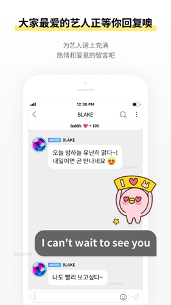

用了 bubble 两年才发现：原来它还藏着这些让订阅费值回票价的小设计
bubble 不只是收消息的广播私信工具，它还藏着 D+ 纪念日计数、回复字数阶梯解锁、三入口分渠道管理等多数人没注意到的功能，翻一遍能省不少心。
我用 bubble官网 订阅一位 JYP 家的艺人快两年了。最开始把它当一个付费消息推送器——艺人发什么我收什么，仅此而已。直到上个月帮一个新入坑的同担解答订阅问题，翻了一圈设置和帮助文档，后来去 bubble文档 翻了一下才搞清楚这个应用藏得真深。
你以为 bubble 就是个聊天界面样式的通知栏？其实它暗地里做了好几个「让你舍不得走」的设计，还有几个能帮你管钱管订阅的实用入口，官方商店页面上半句话都没提。下面我把这两年挖出来的四个隐藏功能整理一下，有的能帮你省下一笔糊涂账，有的能让你的订阅体验完全不一样。
隐藏功能一：D+ 纪念日不是装饰，它真的绑定了你的回复权限
打开 bubble 聊天室，最显眼的那个「D+XXX」计数你可能见过，但大概率没当回事。我之前以为那就是个情感化的小彩蛋，直到有天发现 D+200 之后我能写的回复字数突然变长了一截。
去翻设置才搞清楚：回复字数的上限直接跟你的连续订阅天数挂钩。刚订阅时你能写的字数有限，随着 D+ 数字往上走，解锁的回复字数阶梯式增加。官方没有单独列一张表说 D+多少解锁多少，但能确定的是 D+200 是一个明显的门槛。这个设计藏得很聪明——它把「我跟这位艺人的关系长度」变成了一个实实在在的权益，而不是一个空洞的数字。
更狠的是清零规则：只要订阅断过一次，不管你之前是 D+500 还是 D+1000，重新订阅直接从 D+1 再来。我认识一个老粉，去年因为忘了关自动续订断了一个月，回来发现自己的计数清零了，气得当场又充了一年的。想冲某个纪念日节点的人（比如 D+100、D+365），提前看好到期日，别让续订断在节点前一天。

隐藏功能二：订阅管理有三个入口，走错一个全白搭
这是我踩过的最大的坑。去年我删了 bubble 应用换手机，忘了去 下载 页面重新装一份，结果三个月后发现 Apple 账户还在扣订阅费——我以为删 App 就等于退订了，但其实订阅管理跟应用本身完全是两套体系。
bubble 的订阅管理分三个渠道，每个渠道有自己专属的管理入口：
应用内只能看状态。你能在这里看到自己持有哪些券、对应哪个艺人、到期日是哪天，但你没法在这里取消订阅或改支付方式。它就是一个查询窗口。
应用商店管的是你通过 App Store 或 Google Play 内购的那些券。在 iPhone 上要进系统设置 > Apple 账户 > 媒体与购买项目 > 订阅，安卓则是 Google Play 头像 > 付款与订阅 > 订阅。这里能看到你所有通过该商店账号的自动续订项目，bubble 只是其中一条。排查「为什么还在扣钱」时，这一页是真相源。
官方网络商店管的是你通过 bubble 官网买的那些券。这个入口最冷门，大部分新用户根本不知道它存在，但如果你是在电脑端官网下单的订阅，它的续订和取消只能在网络商店的 MY 菜单里操作——去应用商店查会显示「查无此订阅」。
这三个入口各管一摊，不能混用。渠道对渠道取消，走错入口只会浪费时间。我现在养成了每月月初跑一遍三个入口对账的习惯，再也没出现过糊涂账。
隐藏功能三：删 App 真的不等于退订，注销账号更要小心
接上一个坑继续说。bubble 官方文档里专门有一页讲这个，但被埋在订阅管理的子目录里，标题也不醒目。删应用只是把客户端从手机上移除，你的订阅合约是跟应用商店或网络商店签的，合约不会因为你删了客户端就自动终止。自动续订还在照常跑，只是你收不到消息通知而已——等你某天想起这件事，可能已经被扣了好几个月。
更吓人的是注销账号。官方条款写得很明确：注销 bubble 账号会连带删除你的个人信息，并且已经付费的服务会立即失效。我有个朋友试过注销重登，结果之前攒了快一年的 D+ 计数和尚未到期的订阅权益一起没了，找客服也没帮上忙。如果只是想换绑手机号或换个设备登录，千万别走注销这条路，联系客服改信息就行。
隐藏功能四：家长账户的隐藏管控
如果你给未成年孩子的设备装了 bubble，或者你自己是用家长账户管理购买的，有个设置你一定要知道。iOS 的「购买前询问」和安卓的家庭管控在 bubble 的应用内购流程里是生效的——儿童账户发起的订阅购买会被拦截，必须经过监护人同意才能完成支付。
这个功能默认是开的，但很多人买订阅时会选择跳过或关闭，事后忘了自己关过，某天发现孩子自己点了订阅才追悔莫及。如果是给孩子用的设备，跑一遍系统设置确认家庭管控的开关状态，比事后找退款要省心得多。
一个提醒：别把广播私信当成一对一聊天
最后说一个不是功能但比功能更重要的认知修正。bubble 的界面长得跟聊天应用一模一样，左边是艺人的头像，右边是你的消息列表，翻起来就像在跟真人对话。但它本质是广播式私信——艺人发出的一条消息，所有订阅这位艺人的用户收到的是同一条。你的回复艺人有可能看到，但字数有限、次数有限，别抱太高期待。
这个认知偏差是差评区最常见的投诉来源。有人抱怨「为什么我发了十条回复一条都没被读」，有人以为「付了钱艺人就必须每天发消息」。把预期摆正，你会少生很多气。
收尾
这四个功能官方没放在显眼的地方，甚至连帮助文档都藏得很深。但把它们摸透之后，bubble 这个订阅应用的体验完全不一样了——D+ 计数不再只是个虚头巴脑的数字，它直接影响你的回复权限；三个管理入口的区分让订阅费不再是糊涂账；删 App ≠ 退订这条规则帮你避过了最常见的坑。
订阅本质上是一种服务消费，但 bubble 在这里做得有点超出预期——它没有把用户当成单纯的付费者，而是在每一个细节里都埋了一点「让你觉得自己是特殊的」小心思。把这些小心思找出来用透，订阅费才能真的值回票价。
上面提到的一些官方文档我平时也会同步维护一份备份，在 GitHub、Gitee 和 GitCode 三个平台上都能访问到。